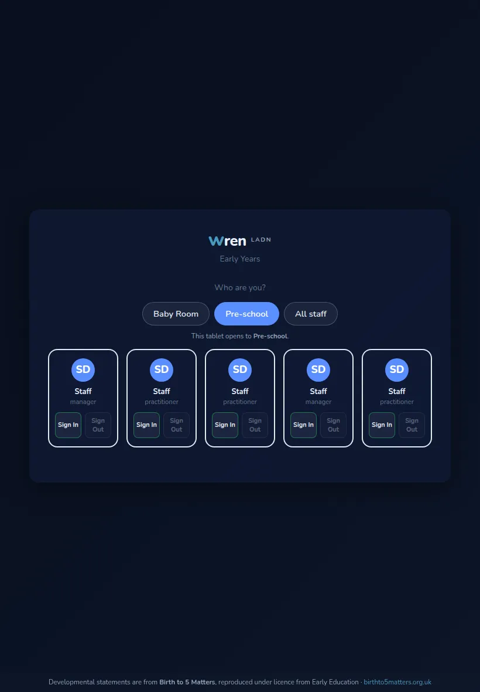
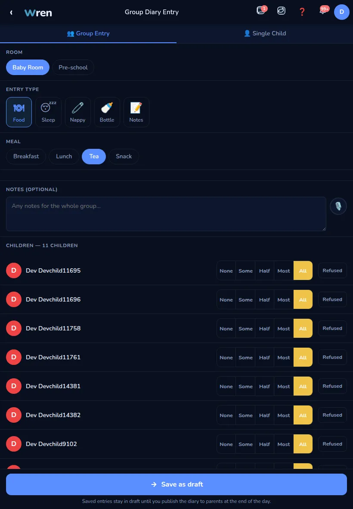
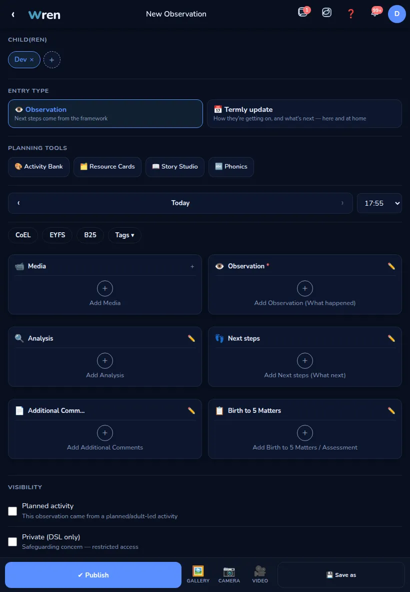

How to use Wren day to day — signing in, the register, the daily diary, observations, messaging, and the staff app. Short answers, numbered steps, a picture of the button. Type a word below to jump straight to the answer you need.
Nothing matches that. Try a shorter word, or clear the box to see every topic.
The room tablet and the staff app, and what to do if you're locked out.
The tablet shows a grid of staff photos to tap, then your own PIN.

If it doesn't work: "Incorrect PIN" clears the pad so you can try again. If you've genuinely forgotten your PIN, there's no "forgot PIN" button — ask a manager to reset it for you.
The staff app (hr.example-nursery.co.uk) uses your email and PIN, the same PIN as the tablet.
If you see a "Wren ID" or Google sign-in button on this screen, that's an alternative door some settings turn on — your email + PIN always works regardless.
There's no self-service reset — a manager has to do this for you.
How your hours get recorded.
Tap your fob on the reader at the door — that's it, nothing else to open.
If it doesn't work: if your hours ever look wrong, tell a manager rather than trying to fix it yourself — there's more than one way a tap gets recorded, and sorting it out needs someone who can see the full picture.
Signing children in and out.
The Child Register is where every arrival and collection is recorded.
If it doesn't work: if the person collecting isn't on the list, don't sign the child out — check with a manager first.
Meals, sleep, nappies and notes — what parents see that day.
You can log for a whole room at once, or for one child.

There's a dedicated screen for marking a group down for a nap, rather than doing each child one at a time in the diary.
Capturing what a child is doing and learning.
An observation is built from a few cards — fill in as many as apply, then publish.

If it doesn't work: if you're new or not yet signed off to publish directly, your observation is held for a manager to check first — it still saves, it just isn't shown to parents until they've reviewed it. That's normal, not an error.
A next step is something specific you're working on with your key child — kept to a handful at a time, not a long list.
The children you're the key person for.
One list of the children you're responsible for as key person.
The right tool depends on who you're writing to.
Parents are messaged inside the app, not by email — it keeps a record tied to the child.
Send an Email (also in the More menu) is not for parents — that one's for outside organisations like the council or a supplier, and every message you draft there is checked by a manager before it goes anywhere.
Recording what happened, and how it's signed off.
Every accident gets its own record, signed by whoever administered first aid.
A manager then reviews it and marks it Reviewed & Closed — you don't need to do anything else once you've saved it.
Who can log it, and what's needed first.
You always need written parental consent before giving any medication — the form won't let you skip it.
If it doesn't work: not everyone can log medicine — it's switched on per person by a manager. If saving fails, that's probably why — ask a manager to check your permission rather than keep trying.
The 10-minute safety checks on a sleeping child — different from logging a nap in the diary.
While a child sleeps, they need a breathing check logged every 10 minutes — this is a safeguarding record, not paperwork to catch up on later.
If it doesn't work: if a check was late, log it late and honestly rather than skip it — a gap in the chart matters.
The plan your room is working from.
Tap Planning in the menu — which exact view opens depends on a setting for your room, so it may look like a weekly grid or a half-term view.
hr.example-nursery.co.uk — your rota, holiday, CPD and more, from your own phone.
Your shifts live under the My Shifts tab at the bottom of the app — not under More.
One form for both, with a quick look at who else is already off before you submit.
Both are under More.
Payslips aren't in the staff app yet — Documents to Sign is only for contracts and policies to acknowledge, not payslips.
Two different things, both on your My Profile page.
Found something broken, or have an idea?
On the room tablet there's a direct button for this.
Fixes go out every Friday at midnight, so something you report this week is usually sorted by the next.
If it doesn't work: there's no bug button in the staff app on your phone yet — if you only use that, mention it on the tablet instead, or tell a manager directly.
Your Nursery · Wren staff guide · last updated 5 October 2026